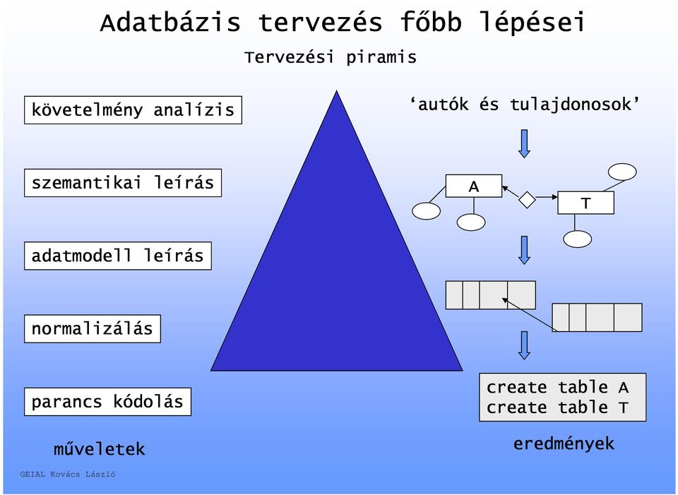

Adatbázisrendszerek
Optimalizálás
Web technológiák

Adatbázisrendszerek:
A tantárgy a relációs adatbázisok alapjait tartalmazza.
Tematika:
Adatkezelés alapfogalmai
Szemantikai adatmodellek
Relácios adatmodell
SQL nyelv alapjai
A beágyazott SQL és az OCI felület